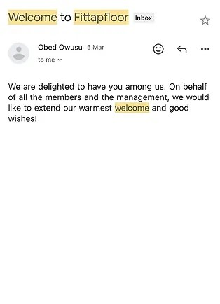

As I gear up for the AZ-104 exam, Azure Active Directory seems to come up quite a bit. So I decided to build a project in Azure to help automate the onboarding process of new employees onto an enterprise. This includes getting them into Azure AD and assigning any Azure resources they might need.
In this project, the following services were used:
Azure Active Directory acts as the central directory for your organization's users and their access permissions. You configure it with user attributes, roles, and groups relevant to your organization. I already had one set up, so not much configuring was necessary here.
Azure Logic Apps is a cloud service offered by Microsoft Azure that allows you to create and run workflows for automating business processes and integrating various services and applications. Using Logic Apps and Entra ID, I have built a workflow that will automatically trigger whenever a new entry is added to Sharepoint, or a specific email or form is submitted. This way I could test and show that the automation is working. When the trigger event occurs, the Logic App workflow is initiated. The first action was to create a user in Microsoft Entra ID from the HTTP request , added a new parameter for Job Title which I used to assigned the user to the right group
The first action was to create a user in Microsoft Entra ID from the HTTP request , added a new parameter for Job Title which I used to assigned the user to the right group. Within the Logic App workflow, I incorporated the Azure AD connector to create new user accounts. The information required for account account creation, such as the employee's name and email address, is extracted from the trigger event, This ensures that each new employee gets an Azure AD account. With this I can also can assign the new user to relevant groups or roles. For instance, if the trigger event indicates that the new employee belongs to the Sales department, the Logic App will assign them to the “Sales Users” group or provide Sales-specific roles to grant the appropriate permissions. After creating a new user in Microsoft Entra ID Tenant and assigning the roles and groups, my next step was to send an email to the new employee I created welcoming them to the company. This step was fairly straightforward using outlook 365 “ Send an email trigger from the dynamic content
My last step will be to monitor and review the onboarding process through Logic Apps runs history and Azure AD logs to ensure smooth operations. The Logic App includes an Email connector to send a welcome email, this emails typically contains essential information like login credentials and other access instructions.
Going through this project was a great learning experience. It really gave me a hands on perspective to all the things I have studying the past few weeks. Through this project, I've achieved several key learning outcomes. Firstly, I've gained a deep understanding of Azure Active Directory (Azure AD) setup, enabling me to effectively manage user identities and access. Secondly, I've honed my skills in designing automation workflows using Azure Logic Apps, selecting triggers, and actions tailored to specific events. Thirdly, I've become proficient in automating user account creation in Azure AD by leveraging Azure AD connectors within Logic Apps and extracting pertinent data from trigger events. In addition, I have learned how to assign pre-defined roles and groups by job position or department, improving my ability to manage user access control better. I have also learned how to automatically provision Azure resources, such as virtual machines and permissions, with the help of the Azure resource manager connector inside Logic Apps. I have also become skilled at creating personalized welcome emails for new hires using Logic Apps, making the onboarding process smoother and more informative. I now also have the ability to monitor and review the whole onboarding process, as I am able to track progress through logic apps run history as well as Azure AD logs. As a result, I am able to address issues or enhancements quickly and effectively. This project not only improves process efficiency by eliminating manual tasks, but also improves scalability and consistency in onboarding, as well as improving the security of the process. I have also acquired valuable integration skills to connect various Azure services as well as external systems, making it easier for me to adjust and optimize automation process to meet changing business requirements as well as new hire scenarios
Go Back to Home